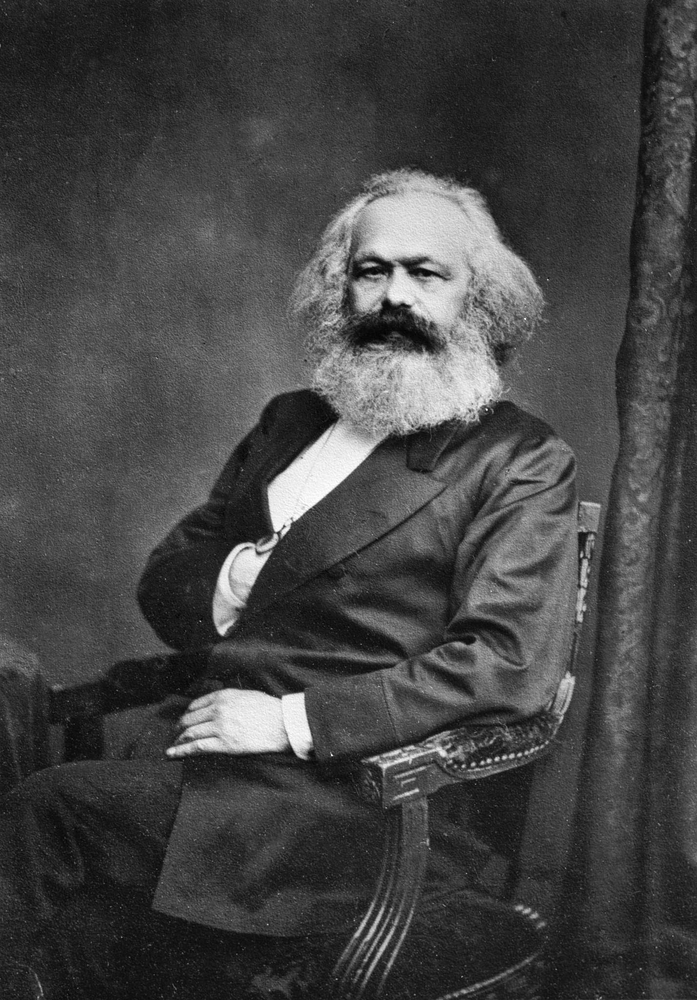

人与世界的联系
劳动，让能力成为现实。
劳动是人与自然发生联系、创造生活资料的重要活动。人在改造外部世界的过程中，也发展自己的能力。但在特定社会关系下，劳动也可能成为外在的压力，让人与劳动成果、劳动过程相疏离。
我的旁批
延伸阅读：《1844年经济学哲学手稿》一份小组作业，让我想到：每个人是否有参与决定的机会？成果是否体现了大家的贡献？理解劳动，也要关注劳动如何被组织。
以上为阅读概括与个人理解，不是原文引述。

最初，马克思对我而言，
是课本上的名字。
大胡子、厚重的著作、需要理解的概念。这些构成了关于他的第一印象。但一个思想家与我的关系，是否只能停留在考试的答案里？
当我把目光移向日常生活，那些看似遥远的问题慢慢具体起来：一件商品的背后是谁的劳动？我们为什么工作？一个人的成长，需要怎样的社会条件？
我心中的马克思，便从这些问题中逐渐清晰。
概念需要准确理解，也需要具体的入口。这份手记中的生活情境是思考示例，第一人称文字是主题表达，并非作者真实经历的记录。
轻点一个场景，翻到它背后的问题。
屏幕上是距离和时间，屏幕外是备餐、打包、配送等环节中具体的人。便利背后，有一条容易被忽略的劳动链。
我的理解：尊重劳动，可以从看见劳动者的处境开始；进一步还要追问，怎样的规则能保障他们的劳动与休息。
我们看到品牌、价格和用途，却很少看到原料生产、加工和运输中的劳动关系。商品把相距很远的人联系起来，也可能遮住这些联系。
我的理解：理解商品，不止于比较贵与便宜，还要观察物与物的交换背后，人与人怎样发生关系。
谋生是现实的需要。但人也希望在劳动中运用能力、与他人合作，并对成果产生认同。当这些愿望与现实冲突，问题便值得认真讨论。
我的理解：理想的劳动不只是个人“热爱”的结果，也需要合理的劳动条件与制度保障。
人与世界的联系
劳动是人与自然发生联系、创造生活资料的重要活动。人在改造外部世界的过程中，也发展自己的能力。但在特定社会关系下，劳动也可能成为外在的压力，让人与劳动成果、劳动过程相疏离。
一份小组作业，让我想到：每个人是否有参与决定的机会？成果是否体现了大家的贡献？理解劳动，也要关注劳动如何被组织。
以上为阅读概括与个人理解，不是原文引述。
有一句话，值得反复读
“每个人的自由发展
是一切人的自由发展的条件。”
马克思、恩格斯 ·《共产党宣言》
查阅原文劳动的创造性与现实中的疲惫可以同时存在。马克思对异化劳动的讨论，促使我们关注劳动者与劳动过程、成果之间的关系。理解消耗，不能只归结为个人心态，也需要看工作时长、决定权与分配方式。
个人努力与社会条件并不互相排斥。教育机会、劳动保障和公共服务影响着努力能够走多远。承认这些条件，是为了更具体地理解人的成长，也让更多人的努力有机会得到回应。
先把论述放回它的历史语境，再分辨其中的问题、方法与具体判断。面对新的技术和社会现象，需要新的材料与调查。把思想用于理解现实，也意味着允许现实检验自己的理解。
从一件具体的小事开始，
让思考拥有现实的落点。
一次小组作业中，明确分工、共同讨论，也认真记录那些不容易被看见的整理与协调工作。
遇到一个社会现象，先寻找材料、了解不同处境，再形成判断，不让一条热搜代替全部事实。
选一段原文细读，区分原文、解释与自己的推论。把没有读懂的问题留下，带着它继续阅读。
今天，有什么日常小事，让你想到了
劳动、自由，或者人与人的联系？
让我开始追问：我们能否共同创造
一种让人更自由发展的生活？